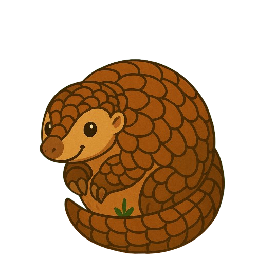

tatu bola

Tamanduá-bandeira

macaco-prego
onça pintada

Arara azul

ararinha azul
ringneck
Iguana-verde
Jararaca
Tucano-toco
Pássaro-preto

Mico-leão-dourado

Jacaré-do-papo-amarelo

Tatu-galinha
Leis de Proteção a Espécies Silvestres
-
Lei nº 9.605/1998 (Lei de Crimes Ambientais)
- Proíbe a caça, transporte e venda de animais silvestres sem autorização.
- Penaliza maus-tratos e destruição de habitats.
- Regulamenta infrações ambientais e estabelece multas para tráfico de animais.
- Lei nº 5.197/1967: Protege fauna silvestre.
- Determina que toda a fauna silvestre pertence à União.
- Proíbe caça profissional e venda de animais silvestres
sem permissão. - Convenção sobre o Comércio Internacional das Espécies da Flora e Fauna Selvagens Ameaçadas de Extinção (CITES)
- Acordo internacional assinado pelo Brasil que regula o comércio de espécies ameaçadas.
- Protege habitats naturais de espécies silvestres.
- Regula o comércio legal de animais silvestres criados em cativeiro.
Decreto nº 6.514/2008:
Lei nº 5.197/1967 (Código de Fauna Brasileira)
Lei nº 12.651/2012 (Código Florestal Brasileiro)
Portaria IBAMA nº 93/1998